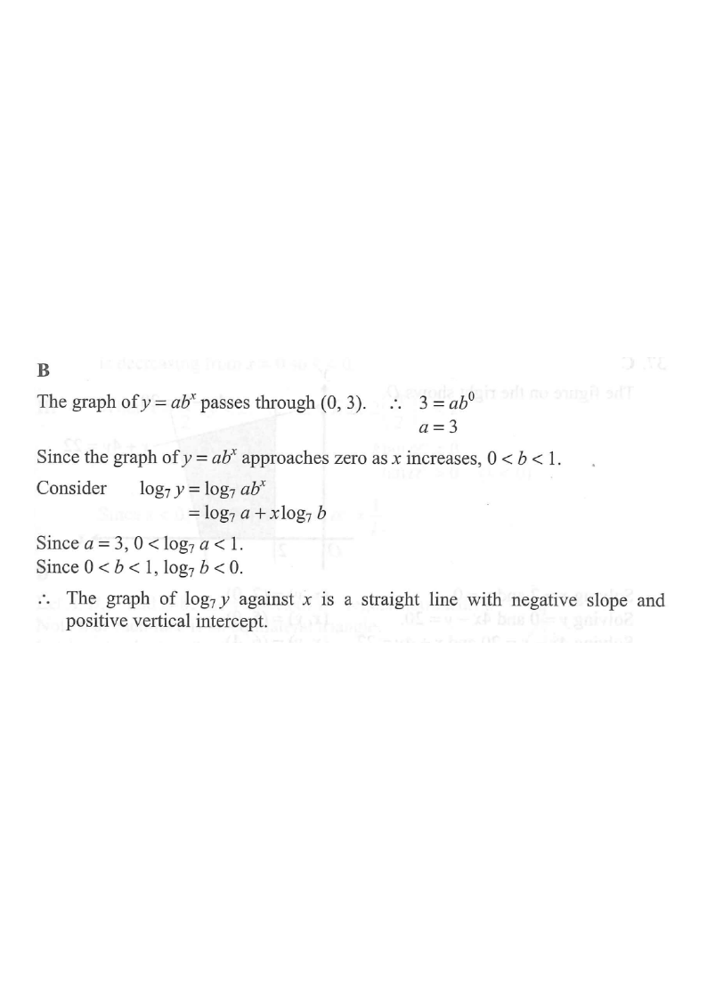

Step 1 — the given graph $y=ab^{x}$ and its $y$-intercept $(0,3)$.
given curve $y=ab^{x}$ point $(0,3)$, $a=3$ $0<b<1$ (decay) answer line $\log_7 y$
HKDSE 2013 Paper 2 · Q32
The figure shows the graph of $y=ab^{x}$, where $a$ and $b$ are constants. The graph passes through $(0,\,3)$ and approaches zero as $x$ increases. Which of the following graphs may represent the relation between $x$ and $\log_{7} y$ ?
A positive slope, positive $y$-intercept
B negative slope, positive $y$-intercept ✓
C negative slope, negative $y$-intercept
D positive slope, negative $y$-intercept

Figure (original exam diagram)
1Read the given graph
Exponential Function\(y=ab^{x}\)The curve cuts the \\(y\\)-axis at \\((0,3)\\), so \\(a=3\\), and it falls, so \\(0
The curve is decreasing and approaches zero as $x\to\infty$, so $0<b<1$. It cuts the $y$-axis at $(0,3)$, so $a=3$.
Hint: an exponential graph with $0<b<1$ is a decreasing (decay) curve; the $y$-intercept gives the value of $a$.
2Take logarithms base 7 of both sides
We need $x$ against $\log_{7}y$, so make $\log_{7}y$ the subject.
$$\log_{7}y=\log_{7}\left(ab^{x}\right)$$
Hint: taking the same logarithm on both sides keeps the equation balanced.
3Apply the laws of logarithms
Product Law of Logarithms\(\log(MN)=\log M+\log N\)It splits \\(\log_{7}(a b^{x})\\) into a constant term plus an \\(x\\)-term, which is the form of a straight line.
Power Law of Logarithms\(\log M^{k}=k\log M\)It brings the exponent \\(x\\) in \\(b^{x}\\) down to become the gradient \\(\log_{7}b\\) of the line.
Use $\log(MN)=\log M+\log N$ and $\log M^{k}=k\log M$.
$$\log_{7}y=\log_{7}a+x\log_{7}b$$
Hint: this is exactly $Y=mx+c$ with $Y=\log_{7}y$ — a straight line.
4Determine the sign of the slope
Since $0<b<1$, $\log_{7}b<0$, so the slope is negative — the line falls from left to right.
Hint: $\log_{7}3>0$ because $3>1$, so the intercept lies above the $x$-axis — this is graph B.
Answer: B (a straight line with negative slope and positive vertical intercept)
PRACTICESimilar question — try it yourself
Question. The graph of \\(y=ab^{x}\\) cuts the \\(y\\)-axis at \\((0,2)\\) and rises as \\(x\\) increases. When \\(\log_{3}y\\) is plotted against \\(x\\), describe the resulting straight line.
Show the worked solution
Step 1. At \\(x=0\\), \\(y=ab^{0}=a=2\\), and the rising curve means \\(b>1\\).
Step 2. Take logarithms base \\(3\\) of both sides: \\(\log_{3}y=\log_{3}(2b^{x})\\).
Step 3. By the product and power laws, \\(\log_{3}y=\log_{3}2+x\log_{3}b\\) \u2014 a straight line with gradient \\(\log_{3}b\\) and vertical intercept \\(\log_{3}2\\).
Step 4. Since \\(b>1\\), \\(\log_{3}b>0\\); and \\(\log_{3}2\approx0.631>0\\), so the intercept is above the \\(x\\)-axis.
Step 5. The graph is therefore a rising straight line cutting the vertical axis above the origin.
Answer: A rising line with gradient \\(\log_{3}b>0\\) and vertical intercept \\(\log_{3}2\approx0.63\\)